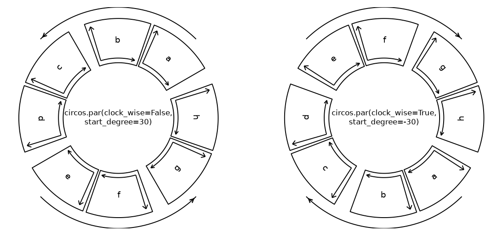
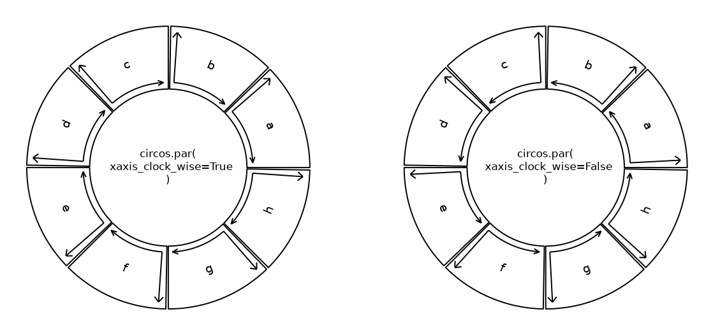
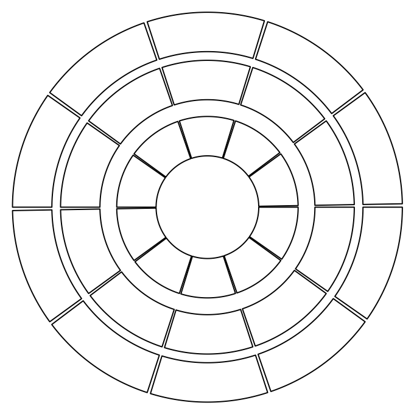

2 Circular layout#
2.1 Coordinate transformation#
Mapping data onto a circle involves transformations across three
coordinate systems. First is the data coordinate
system, where x and y ranges match the scale of your input data
in each cell. Second is the polar coordinate system,
which maps each rectangular cell onto a circular arc
(theta, rou). Third is the canvas coordinate
system, where graphics are rendered onto the Matplotlib
Axes (Figure 2.1). Each cell maintains its own independent
data coordinate frame. circlize-py transforms
(x, y) from data coordinates to polar coordinates and then
to Cartesian canvas coordinates automatically, so you can think of every
cell as a familiar rectangular plotting box.

The canvas coordinate system corresponds to standard Matplotlib data
coordinates spanning (-1, 1) on both the x- and y-axes by
default with an equal (1:1) aspect ratio. The
circular plot is always drawn inside the unit circle (radius
1) and built sequentially from the outside
inward.
2.2 Rules for making the circular plot#
Constructing a circular figure follows a simple, strict lifecycle:
initialize layout -> create track -> add graphics -> create track -> add graphics -> ... -> clear.
Graphics can be added to any cell once its track exists.

- Initialize the layout with
circos.initialize(). Because circular layouts organize data across categories, at least one categorical variable (sectors) is required. Sector x-ranges can be supplied viaxorxlim(see Section 2.3). - Create a track and add graphics. Each new track is
placed immediately inside the previous one. Low-level graphics can only
be drawn after the track is created. There are three ways to populate
cells in a track:
- Create the track first, then call low-level functions such as
circos.points()andcircos.lines()sector-by-sector inside aforloop with explicitsector_index. - Use batch functions such as
circos.trackPoints()orcircos.trackLines()to split vectors bysectorsand draw across all cells at once. - Pass a
panel_fun(x, y)callback tocircos.track(), which runs immediately as each cell is created and automatically receives that cell’s subset ofxandy. This is the recommended pattern (see Section 2.6).
- Create the track first, then call low-level functions such as
- Repeat step 2 for additional inner tracks until you reach the desired inner radius.
- Call
circos.clear()to reset layout state and global parameters before making another plot.
The three plotting patterns look like this in Python:
Pattern 1 — Explicit for loop after track
creation:
circos.initialize(sectors, xlim=xlim)
circos.track(ylim=ylim)
for sector_index in all_sector_index:
circos.points(x1, y1, sector_index=sector_index)
circos.lines(x2, y2, sector_index=sector_index)Notice that track_index can be omitted immediately after
circos.track(), because the newly created track is
automatically marked as the “current” track.
Pattern 2 — Batch track functions:
circos.initialize(sectors, xlim=xlim)
circos.track(ylim=ylim)
circos.trackPoints(sectors, x, y)
circos.trackLines(sectors, x, y)circos.trackPoints() and
circos.trackLines() internally loop over
sectors and call circos.points() /
circos.lines(). They are convenient for quick single-layer
tracks, though panel_fun offers much greater
flexibility.
Pattern 3 — panel_fun callback
(recommended):
circos.initialize(sectors, xlim=xlim)
def panel_fn(x, y):
circos.points(x, y)
circos.lines(x, y)
circos.track(sectors, x=all_x, y=all_y, ylim=ylim, panel_fun=panel_fn)Because circlize-py updates the internal current sector
and track index before invoking panel_fun on each cell,
low-level functions inside panel_fun automatically target
the active cell without needing sector_index or
track_index.
2.3 Sectors and tracks#
A circular layout is a 2D grid of sectors (angular wedges) and tracks (concentric rings). In the diagram below, the red ring highlights one track and the blue wedge highlights one sector; their intersection is a single cell.

Sectors are allocated by circos.initialize(). Each
unique category becomes one sector whose angular width is proportional
to its x-range. You can supply a numeric array x matching
the length of sectors (so min/max x-ranges are computed per
sector), or supply xlim directly as either a
(n_sectors, 2) NumPy array / DataFrame or a length-2
[xmin, xmax] sequence shared across all sectors. If a
DataFrame with a named index is passed as xlim,
sectors can be omitted and row index labels become the
sector names:
circos.initialize(sectors, x=x)
circos.initialize(sectors, xlim=xlim)
circos.initialize(xlim=xlim_df)After circos.initialize(), the layout geometry is
recorded internally, though nothing is visible on the Matplotlib canvas
until at least one track is drawn.
Sector order on the circle is determined by sectors:
- If
sectorsis apandas.Categorical(or categoricalSeries), sectors follow the explicit category order (categories). Just like R’sfactor(sectors),pd.Categorical(sectors)sorts category names alphabetically by default, whereaspd.Categorical(sectors, categories=sectors, ordered=True)preserves the exact order given insectors. - If
sectorsis a plain Python list or array with unique values (no duplicates),circos.initialize()preserves its insertion order; ifsectorscontains repeated entries (e.g., data rows belonging to 8 categories), unique categories are sorted alphabetically unless wrapped inpd.Categorical(..., categories=...).
import pandas as pd
sectors = ["d", "f", "e", "c", "g", "b", "a"]
s1 = pd.Categorical(sectors)
circos.initialize(s1, xlim=[0, 1])
s2 = pd.Categorical(sectors, categories=sectors, ordered=True)
circos.initialize(s2, xlim=[0, 1])
Cells in the same sector share the same x-range across all
tracks. Consequently, each call to circos.track()
only needs a y-range (y or ylim), typically
shared across all cells in that track. Passing x to
circos.track() is optional and simply forwards per-sector
x subsets into panel_fun(x, y):
circos.track(sectors, y=y)
circos.track(sectors, ylim=[0, 1])
circos.track(sectors, x=x, y=y, panel_fun=...)If sectors is omitted in circos.track(),
cells are created for all initialized sectors. If sectors
covers only a subset of sectors, cells in the remaining sectors are
still created internally without visible borders so track geometry stays
aligned:
# Only sectors present in `sectors_subset` draw visible borders
circos.track(sectors_subset, y=y)
# All initialized sectors draw visible borders
circos.track(ylim=[0, 1])
circos.track(ylim=[float(y.min()), float(y.max())])Once created, each cell acts as an independent rectangular region
with its own xlim and ylim, and sector and
x-axis directions can be configured independently via
circos.par().


2.4 Graphic parameters#
Global layout options are managed through circos.par().
Several options affect sector allocation and therefore must be
set before circos.initialize():
start_degree(start.degree): Polar angle (in degrees, counter-clockwise from 3 o’clock) where the first sector begins. Settingstart_degree=90starts at 12 o’clock.gap_degree/gap_after(gap.degree/gap.after): Angular gap in degrees between adjacent sectors. Accepts a scalar, a list matching the number of sectors, or adictkeyed by sector names. The first gap is placed after the first sector. Modifying eithergap_degreeorgap_afterupdates both.track_margin(track.margin): Two-element sequence[bottom_margin, top_margin]outside cell borders as fractions of the unit circle radius (or converted viamm_h()/cm_h()/inch_h()).cell_padding(cell.padding): Four-element sequence[bottom, left, top, right]inside cell borders. Indices0and2(bottom/top) are fractions of the unit circle radius (ormm_h()/cm_h()), while indices1and3(left/right) are measured in degrees.unit_circle_segments(unit.circle.segments): Number of straight line segments approximating a full unit circle (2 * pi / unit_circle_segmentscontrols curve smoothness).track_height(track.height): Default radial height of tracks as a fraction of the unit circle radius (includes bottom/topcell_padding, excludestrack_margin). Can be set usingmm_h(),cm_h(), orinch_h().points_overflow_warning(points.overflow.warning): Whether to emit aUserWarningwhen graphics extend outside a cell’s plotting region. Set toFalsewhen placing sector labels outside Track 1.canvas_xlim,canvas_ylim(canvas.xlim,canvas.ylim): Canvas limits on the MatplotlibAxes(default[-1.0, 1.0]). Settingcanvas_xlim=[0, 1], canvas_ylim=[0, 1], for instance, displays only the upper-right quadrant.circle_margin(circle.margin): Positive margins outside the unit circle of length 1 (all sides), 2 ([lr, bt]), or 4 ([left, right, bottom, top]), expandingcanvas_xlimandcanvas_ylimautomatically.clock_wise(clock.wise): Whether sectors proceed clockwise (True, default) or counter-clockwise (False).xaxis_clock_wise(xaxis.clock.wise): Direction of the x-axis inside every cell (True= clockwise, default;False= counter-clockwise).

Default values of circos.par() are summarized below:
| Parameter | Default value |
|---|---|
start_degree (start.degree) |
0.0 |
gap_degree / gap_after |
1.0 |
track_margin (track.margin) |
[0.01, 0.01] |
cell_padding (cell.padding) |
[0.02, 1.0, 0.02, 1.0] |
unit_circle_segments |
500 |
track_height (track.height) |
0.2 |
points_overflow_warning |
True |
canvas_xlim (canvas.xlim) |
[-1.0, 1.0] |
canvas_ylim (canvas.ylim) |
[-1.0, 1.0] |
circle_margin (circle.margin) |
[0.0, 0.0, 0.0, 0.0] |
clock_wise (clock.wise) |
True |
xaxis_clock_wise (xaxis.clock.wise) |
True |
Parameters controlling sector allocation (start_degree,
gap_degree/gap_after,
canvas_xlim, canvas_ylim,
circle_margin, clock_wise, and
xaxis_clock_wise) must be configured before
circos.initialize(), and left/right
cell_padding (indices 1 and 3)
cannot be changed afterward. Always call circos.clear()
after finishing a plot so these options reset cleanly.
circos.par() supports function calls, dictionary
indexing, and attribute assignment interchangeably, and
RESET=True restores defaults:
from circlize_py import circos
circos.par(start_degree=30)
circos.par["start.degree"] = 30
circos.par.start_degree = 30
circos.par(RESET=True)
print(circos.par)CircosPar(start.degree=0.0, gap.degree=1.0, track.margin=[0.01, 0.01], unit.circle.segments=500, cell.padding=[0.02, 1.0, 0.02, 1.0], track.height=0.2, points.overflow.warning=True, circle.margin=[0.0, 0.0, 0.0, 0.0], canvas.xlim=[-1.0, 1.0], canvas.ylim=[-1.0, 1.0], major.by.degree=10.0, clock.wise=True, xaxis.clock.wise=True, message=True)For layouts where sectors vary in order or subsetting (such as
chordDiagram() in Chapter 14),
gap_degree / gap_after can be passed as a
dictionary keyed by sector names ({"a": 2, "b": 10, ...}),
so gaps are automatically matched and reordered by sector name.
2.5 Create plotting regions#
A track’s plotting regions must be created with
circos.track() (or circos.trackPlotRegion())
before drawing low-level primitives. At minimum, provide either
y or ylim. When sectors,
x, and y are supplied with matching lengths,
circlize-py subsets them by sector and passes each cell’s
slices to panel_fun.
Styling arguments such as bg_border and
bg_col accept either a scalar or a sequence matching the
number of sectors (in sector order). Alternatively, you can customize
individual cell backgrounds inside panel_fun using
CELL_META.cell.xlim and
CELL_META.cell.ylim:
circos.rect(
CELL_META.cell.xlim[0],
CELL_META.cell.ylim[0],
CELL_META.cell.xlim[1],
CELL_META.cell.ylim[1],
col="#FF000040",
border=1,
)Passing track_margin or cell_padding
directly to circos.track() overrides those settings for
that track alone (left/right padding indices 1 and
3 remain fixed by initialization).
2.6 Update plotting regions#
Passing an existing track_index (1-based)
to circos.track() re-creates the entire track—allowing
ylim to change while keeping the track’s radial position
and height fixed:
circos.track(sectors, ylim=[0, 1], track_index=1, panel_fun=...)To erase and redraw a single cell while preserving its
xlim and ylim, use
circos.update() (or
circos.updatePlotRegion()), which sets that cell as the
active cell for subsequent low-level calls:
circos.update(sector_index, track_index)
circos.points(x, y)2.7 panel_fun argument#
Passing panel_fun=... to circos.track() is
the most idiomatic way to populate cells. Your callback accepts
(x, y) containing the data points belonging to the current
cell (or (None, None) if x/y were
omitted in circos.track()):
sectors = ["a", "a", "a", "b", "b"]
x = np.arange(1, 6)
y = np.arange(5, 0, -1)
def panel_fn(x, y):
circos.points(x, y)
circos.track(sectors, x=x, y=y, panel_fun=panel_fn)You can also ignore (x, y) and subset arrays manually
inside panel_fun using
CELL_META.sector_index:
sectors_arr = np.array(["a", "a", "a", "b", "b"])
x2 = np.arange(1, 6)
y2 = np.arange(5, 0, -1)
def panel_fn(x, y):
mask = sectors_arr == CELL_META.sector_index
circos.points(x2[mask], y2[mask])
circos.track(ylim=[1, 5], panel_fun=panel_fn)Because circos.track() sets the current sector and track
before each panel_fun invocation,
get_cell_meta_data(name) and its convenient proxy
CELL_META both read metadata for the active cell
automatically:
sector.index(CELL_META.sector_index/CELL_META.sector.index): Sector name string.sector.numeric.index(CELL_META.sector_numeric_index): 1-based sector index (1..n_sectors), matching R; useCELL_META.sector_idxfor 0-based0..n_sectors - 1.track.index(CELL_META.track_index): 1-based track index (1..n_tracks).xlim,ylim: 2-element NumPy arrays[min, max]of the cell’s data coordinates.xcenter,ycenter: Midpoints ofxlimandylim.xrange,yrange:xlim[1] - xlim[0]andylim[1] - ylim[0].cell.xlim,cell.ylim: Data ranges extended by horizontal/vertical cell paddings.xplot:[start_degree, end_degree]of the cell in polar angles.yplot:[bottom_radius, top_radius]of the cell on the unit circle.cell.width,cell.height: Angular width (degrees) and radial height (unit-circle units).cell.start.degree,cell.end.degree,cell.bottom.radius,cell.top.radius: Scalar shortcuts forxplotandyplot.track.margin,cell.padding: Margin and padding lists for the cell.
Using get_cell_meta_data()
vs. CELL_META:
from circlize_py import CELL_META, get_cell_meta_data
# Explicit get_cell_meta_data()
circos.track(
ylim=ylim,
panel_fun=lambda x, y: circos.text(
get_cell_meta_data("xcenter"),
get_cell_meta_data("ycenter"),
get_cell_meta_data("sector.index"),
),
)
# Concise CELL_META proxy (supports dot or bracket access)
circos.track(
ylim=ylim,
panel_fun=lambda x, y: circos.text(
CELL_META.xcenter,
CELL_META.ycenter,
CELL_META.sector_index,
),
)Because CELL_META always resolves the current cell, it
is primarily used inside panel_fun. Outside
panel_fun, call
set_current_cell(sector_index, track_index) to target a
specific cell across multiple statements:
from circlize_py import set_current_cell
set_current_cell(sector_index, track_index)
circos.text(CELL_META.xcenter, CELL_META.ycenter, CELL_META.sector_index)2.8 Other utilities#
2.8.1 circlize() and
reverse.circlize()#
circlize() maps data coordinates (x, y)
inside a cell to polar coordinates (theta, rou), while
reverse.circlize() (or reverse_circlize())
maps polar (theta, rou) back to a cell’s data coordinates
(x, y). Both return a NamedMatrix2D supporting
NumPy slicing and named column access ([:, "theta"],
.theta, .rou, .x,
.y):
from circlize_py import circos, circlize, reverse
circos.initialize(["a", "b"], xlim=[0, 1])
circos.track(ylim=[0, 1])
print(circlize(0.5, 0.5, sector_index="a", track_index=1))
# NamedMatrix2D([[270.5 , 0.89]])
print(reverse.circlize(90, 0.9, sector_index="a", track_index=1))
# NamedMatrix2D([[1.51977401, 0.56 ]])
print(reverse.circlize(90, 0.9, sector_index="b", track_index=1))
# NamedMatrix2D([[0.50282486, 0.56 ]])
circos.clear()Notice that the same polar coordinate (90, 0.9) maps to
two different data locations depending on which sector is queried.
Chaining circlize -> reverse.circlize -> circlize
lets multiple circular plots share and connect coordinates on the same
page, which powers nested zooming in Chapter 13.
To convert polar coordinates (theta, rou) to Cartesian
canvas coordinates (x, y), circlize-py exports
polar2Cartesian() (and polar_to_cartesian()).
The example below renders all 32 bundled Keith Haring tiles from
load_extdata("doodle") directly onto a Matplotlib
Axes by transforming each cell center with
polar2Cartesian(circlize(...)) (see Section 3.10 for the dedicated
circos.raster() helper):
import matplotlib.pyplot as plt
from circlize_py import CELL_META, circos, circlize, load_extdata, mm_y, polar2Cartesian
imgs = load_extdata("doodle")
names = [f"tile_{i:02d}" for i in range(1, len(imgs) + 1)]
fig = plt.figure(figsize=(6.4, 6.4), dpi=140)
circos.par(points_overflow_warning=False)
circos.initialize(names, xlim=[0.0, 1.0])
ax = plt.gca()
def panel_tile(x, y):
pos = polar2Cartesian(circlize(CELL_META.xcenter, CELL_META.ycenter))
img = imgs[CELL_META.sector_numeric_index - 1]
circos.text(
CELL_META.xcenter,
CELL_META.cell.ylim[0] - mm_y(2),
CELL_META.sector_index,
facing="clockwise",
nice_facing=True,
adj=[1.0, 0.5],
cex=0.6,
)
cx, cy = float(pos[0, 0]), float(pos[0, 1])
ax.imshow(img, extent=(cx - 0.04, cx + 0.04, cy - 0.04, cy + 0.04), origin="upper", zorder=3)
circos.track(ylim=[0.0, 1.0], track_height=0.14, bg_border="black", panel_fun=panel_tile)
ax.set_xlim(-1.05, 1.05)
ax.set_ylim(-1.05, 1.05)
circos.clear()
2.8.2 Absolute units#
Layout lengths such as track_height are specified in
unit-circle radius units, whereas low-level plotting functions work in
cell data coordinates. circlize-py provides conversion
helpers so physical lengths (mm, cm,
inches) map cleanly to either coordinate system:
mm_h(x),cm_h(x),inch_h(x)/inches_h(x), anduh(x, unit)(convert_length()/convert_height()): convert physical units into canvas radius units (used fortrack_height,track_margin, and verticalcell_padding). Usestrwidth_canvas()/strheight_canvas()to measure string dimensions in canvas units.
mm_h(2) # 2 mm in canvas units
cm_h(1) # 1 cm in canvas unitsmm_x(x),cm_x(x),inch_x(x)/inches_x(x),ux(x, unit)(convert_x()) andmm_y(y),cm_y(y),inch_y(y)/inches_y(y),uy(y, unit)(convert_y()): convert physical lengths into data units along the x- or y-axis of the current cell (or a specifiedsector_index,track_index).
mm_x(2)
mm_x(1, sector_index="a", track_index=1)
mm_y(2)
mm_y(1, sector_index="a", track_index=1)Because cell arc width varies from the bottom radius to the top
radius of a track, *_x() helpers also accept an
h argument (y position in data coordinates, defaulting to
ycenter):
mm_x(2, h=0.8)Here is a concrete example combining mm_h(),
cm_h(), inch_h(), mm_x(),
cm_x(), and cm_y():
import math
import numpy as np
from circlize_py import CELL_META, circos, cm_h, cm_x, cm_y, inch_h, mm_h, mm_x
rng = np.random.default_rng(77)
sectors = list("abcdefghij")
xlim = np.column_stack([np.zeros(10), rng.uniform(0.5, 1.5, size=10)])
circos.par(cell_padding=[0.0, 0.0, 0.0, 0.0], track_margin=[0.0, 0.0])
circos.initialize(sectors, xlim=xlim)
circos.track(
ylim=[0.0, 1.0],
track_height=mm_h(5),
panel_fun=lambda x, y: circos.lines([0.0, mm_x(5)], [0.5, 0.5], col="blue"),
)
circos.track(
ylim=[0.0, 1.0],
track_height=cm_h(1),
track_margin=[0.0, mm_h(2)],
panel_fun=lambda x, y: circos.lines([CELL_META.xcenter, CELL_META.xcenter], [0.0, cm_y(1)], col="red"),
)
circos.track(
ylim=[0.0, 1.0],
track_height=inch_h(1),
track_margin=[0.0, mm_h(5)],
panel_fun=lambda x, y: circos.lines(
[0.0, cm_x(math.sqrt(2) / 2.0)],
[0.0, cm_y(math.sqrt(2) / 2.0)],
col="orange",
),
)
circos.clear()
2.8.3 circos.info() and
circos.clear()#
Call circos.info() at any point to inspect initialized
sectors, tracks, and individual cell coordinates:
sectors = ["a", "b", "c"]
circos.initialize(sectors, xlim=[1, 2])
circos.info()
circos.track(ylim=[0, 1])
circos.info(sector_index="a", track_index=1)
circos.clear()All your sectors:
['a', 'b', 'c']
No track has been created
Your current sector.index is a
---
sector index: 'a'
track index: 1
xlim: [1.0, 2.0]
ylim: [0.0, 1.0]
cell.xlim: [0.9914529914529915, 2.0085470085470085]
cell.ylim: [-0.09999999999999999, 1.1]
xplot (degree): [360.0, 241.0]
yplot (radius): [0.79, 0.99]
cell.width (degree): 119.0
cell.height (radius): 0.2
track.margin: [0.01, 0.01]
cell.padding: [0.02, 1.0, 0.02, 1.0]
Your current sector.index is c
Your current track.index is 1Calling circos.info(plot=True) draws
sector:track labels directly inside every cell—handy for
debugging complex multi-track layouts. Always finish each circular
figure with circos.clear() so global parameters do not leak
into subsequent plots.
2.9 Set gaps between tracks#
set_track_gap() adjusts track_margin
cleanly to place an exact radial gap between consecutive tracks using
physical units such as mm_h() or cm_h():
from circlize_py import circos, cm_h, mm_h, set_track_gap
circos.initialize(list("abcdefghij"), xlim=[0, 1])
circos.track(ylim=[0, 1])
set_track_gap(mm_h(2)) # 2 mm gap before next track
circos.track(ylim=[0, 1])
set_track_gap(cm_h(0.5)) # 0.5 cm gap before next track
circos.track(ylim=[0, 1])
circos.clear()